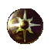

| Picture | Name | Description | What it does | Where it's from |
 |
Wooden shield | A small wooden shield | Nothing | Vt Shops |
| Round Shield | A large wooden shield | Nothing | Fisheries | |
| Steel shield | A large steal shield | Nothing | Npc's around frore, N-7 | |
 |
Baskie Shield | A highly polished black steal shield with a picture of a crimson basilisk (Level 13 req) |
Glowing | Kill and tan Baskie turn scales in under Vt |
|
Improved Baskie Shield | A highly polished black steal shield with a picture of a crimson basilisk | +3 Glowing |
Trade 2 baskies under vt alt 2 |
 |
Bresh | A round shield adorned with the symbol for chaos |
+4 Glowing |
Kill Breshard |
| Time Shield | A highly polished shield formed from sand, fused into the shape of a clock. The clock hands are set to moments before midnight |
Advanced psionic temporal shield IV (Reduces aging) |
Father time quest New years event |